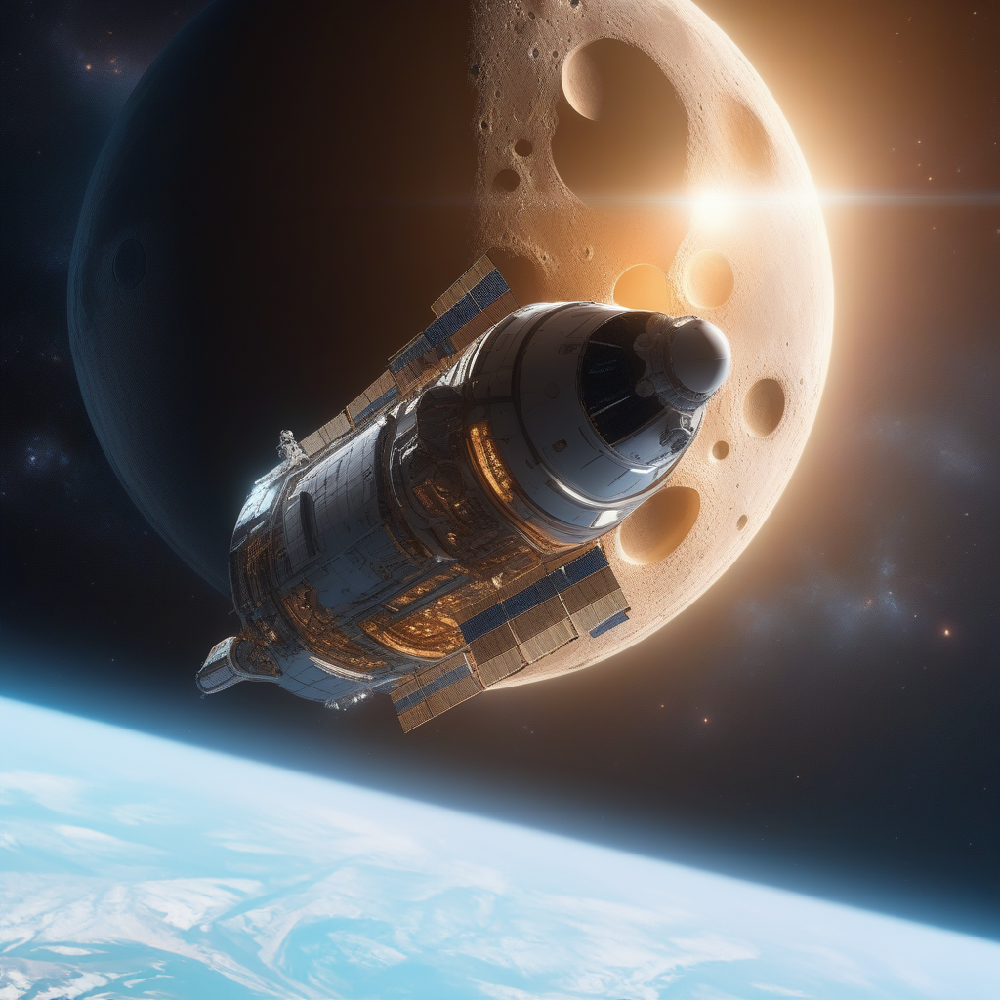

Orbite de la Terre
Nous sommes désormais en orbite autour de la Terre. D'ici, la planète bleue est magnifique. Le premier étage est séparé, il ne reste plus qu'à aller sur la Lune. La trajectoire de la Nasa est rentrée dans l'ordinateur, mais votre instinct vous pousse à utiliser une nouvelle trajectoire, potentiellement plus courte. Pour cela, vous aurez besoin de la confiance de votre équipage